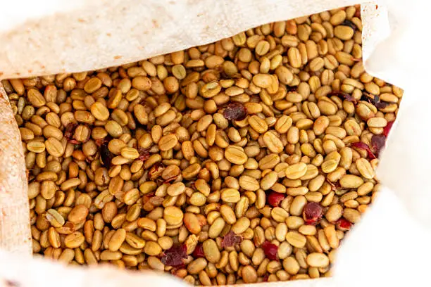
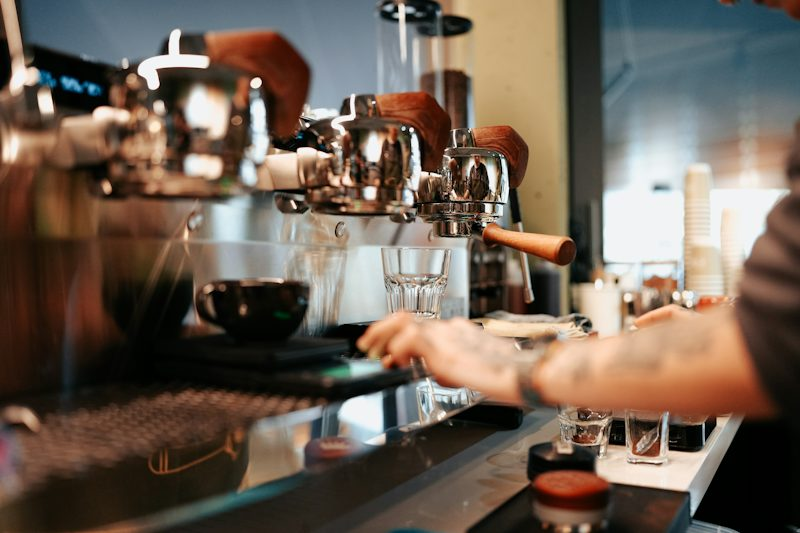
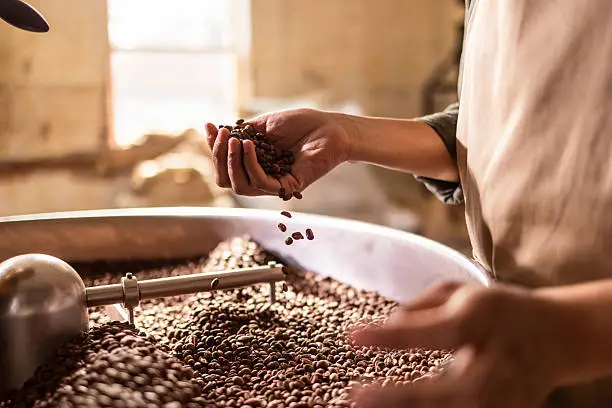
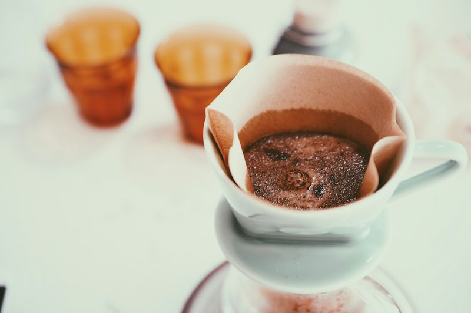
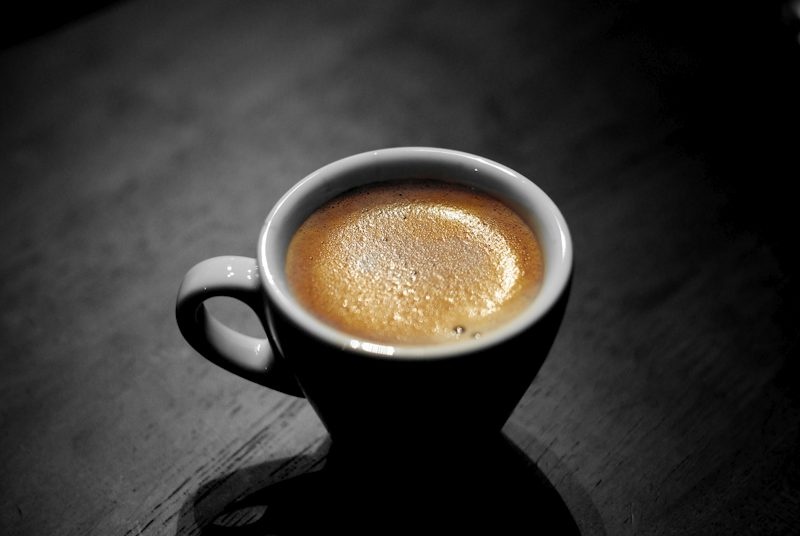

Grão Bourbon Amarelo
Café encorpado com notas sensoriais de caramelo, mel e acidez cítrica suave.
R$ 42,00

A Aura Coffee & Co. nasceu da paixão pelo extraordinário. Como uma micro-torrefação artesanal, selecionamos manualmente lotes exclusivos de pequenos produtores brasileiros. Nosso processo de torra valoriza os aromas naturais e perfis sensoriais únicos de cada grão, oferecendo uma experiência marcante para o seu dia a dia ou evento corporativo.


Café encorpado com notas sensoriais de caramelo, mel e acidez cítrica suave.

Equilíbrio perfeito entre doçura e corpo. Notas de chocolate amargo e nozes.

Torra escura pensada para um espresso marcante, cremoso e com retrogosto prolongado.